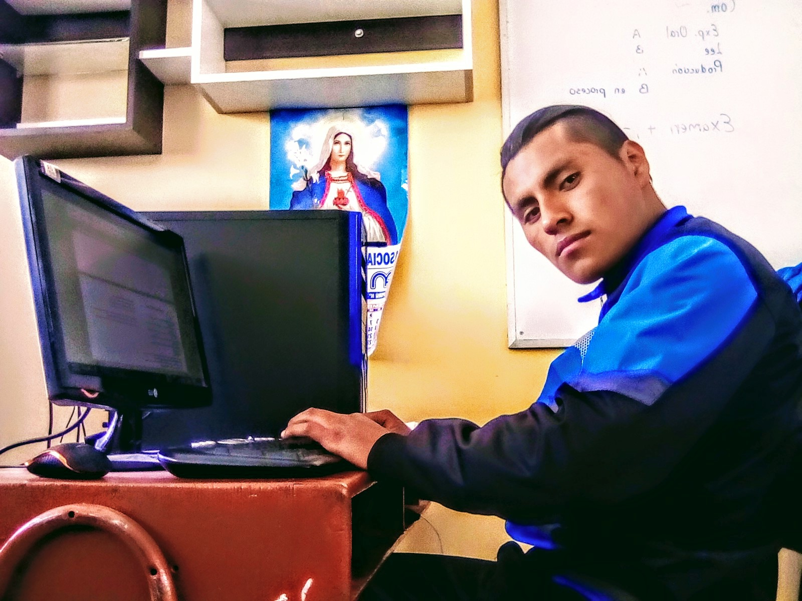

Por qué SER DESARROLLADOR WEB --- Estas razones TE MOTIVARÁN
¿Se puede ser feliz programando? Esta es mi historia
Mi nombre es Jesús Sagua Chucuya, y quiero contarte un poco cómo ha sido mi vida profesional, ya que quizá puedas encontrar algo en común que te ayude a ti a evolucionar hacia ese punto en el que te gustaría estar. Con 18 años y unas notas de las que cualquier madre se sentiría orgullosa, me vi en la tesitura de decidir cuál sería mi futuro durante el resto de mi vida. En esta sociedad nos programan a todos bajo un mismo patrón: estudia mucho para sacarte una carrera, y busca un trabajo fijo en una gran empresa que te dé de comer el resto de tus días. Allí permanecerás hasta que te jubiles, trabajando lo mínimo para que no te echen. Mientras tanto tu jefe te pagará lo mínimo para que no quieras buscarte otra cosa. Una vez alcanzada la jubilación, con todos los achaques propios de la edad y una vida entera sufriendo en un trabajo que no te llena, habrá llegado el momento de hacer lo que siempre has querido (suponiendo que tus nietos te lo permitan). Eligiendo una carrera ¿se podía estar más perdid Y allí estaba yo, con todo eso metido en mi cabeza, y eligiendo qué carrera podría conseguir un futuro próspero para mí. La verdad que por aquel entonces no tenía ni idea de lo que quería hacer con mi vida. Me gustaban los ordenadores como a cualquier otra persona de mi edad, pero nunca me había acercado al desarrollo de software, ni mucho menos nada relacionado con el hardware. He de confesar que en mi vida he montado mi propio ordenador. Pero había que decidir un futuro: la primera carrera más demandada por aquel entonces era Administración y Dirección de Empresas, una de las carreras con más paro hoy en día. Esto demuestra que no sirve de nada ir a lo seguro, porque nada es seguro eternamente. La segunda, casualmente, era informática. Con más dudas que seguridades (no tenía ni idea de cómo era la carrera, ni me molesté en buscarlo) me decanté por Ingeniería Informática. Y debido a la titulitis imperante aquellos años, fui directamente a por la carrera de 5 años.
© El nombre de este sitio. Reservados todos los derechos. Diseñado por HTML Codex